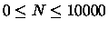

The expression N!, read as ``N factorial," denotes the product of the first
N positive integers, where N is nonnegative. So, for example,
| N |
N! |
| 0 |
1 |
| 1 |
1 |
| 2 |
2 |
| 3 |
6 |
| 4 |
24 |
| 5 |
120 |
| 10 |
3628800 |
For this problem, you are to write a program that can compute the last
non-zero digit of any
factorial for (
). For example, if your program is asked to
compute the last nonzero
digit of 5!, your program should produce ``2" because 5! = 120, and 2 is the last nonzero digit of 120.
Input to the program is a series of nonnegative integers not exceeding 10000,
each on its own line
with no other letters, digits or spaces. For each integer N, you should
read the value and compute the last nonzero digit of N!.
For each integer input, the program should print exactly one line of
output. Each line of output
should contain the value N, right-justified in columns 1 through 5 with
leading blanks, not leading
zeroes. Columns 6 - 9 must contain `` -> " (space hyphen greater space).
Column 10 must contain the single last non-zero digit of N!.
1
2
26
125
3125
9999
1 -> 1
2 -> 2
26 -> 4
125 -> 8
3125 -> 2
9999 -> 8
Miguel A. Revilla
1998-03-10